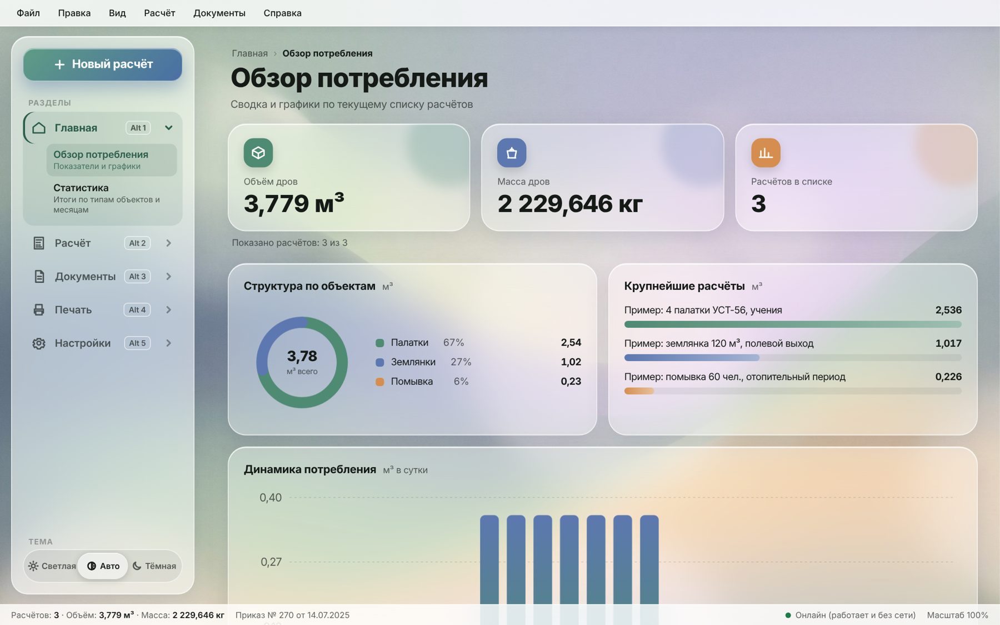
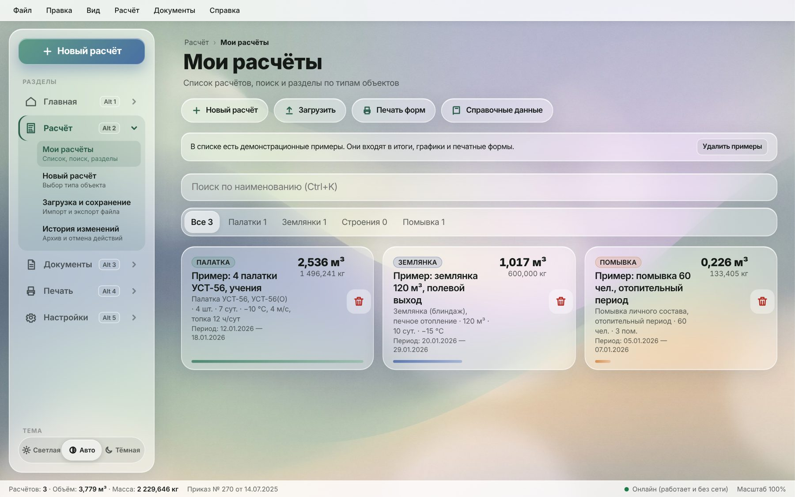
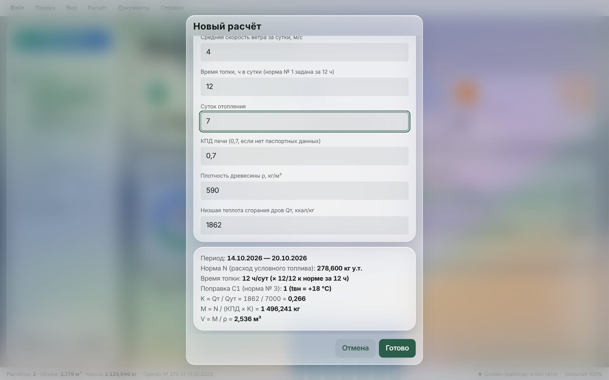
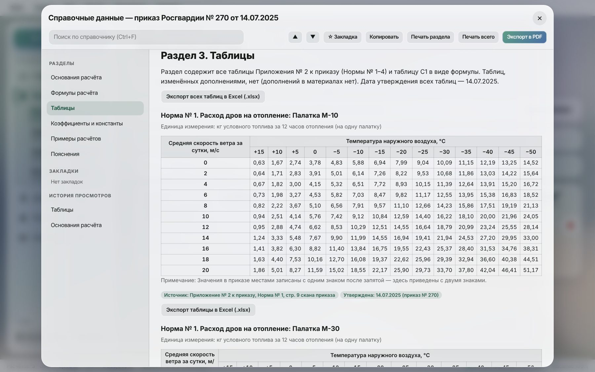
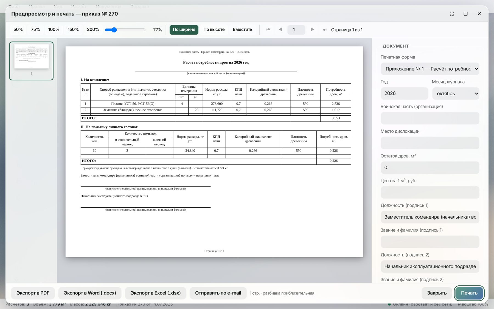

Обеспечение личного состава теплом в полевых условиях остаётся одной из базовых задач тылового обеспечения войск. При размещении подразделений в палатках, землянках (блиндажах) и отдельных строениях основным видом топлива нередко являются дрова, и от точности расчёта их потребности зависят своевременность закупки, создание запасов и обоснованность бюджетных заявок.
Приказом Федеральной службы войск национальной гвардии Российской Федерации от 14 июля 2025 г. № 270 утверждены Порядок обеспечения дровами и Нормы расхода дров в войсках национальной гвардии [1]. Нормы заданы в килограммах условного топлива (кг у.т.), тогда как дрова закупаются, учитываются и хранятся в натуральном выражении — в кубических метрах. Перевод требует последовательного применения нескольких величин: коэффициента полезного действия печи, калорийного эквивалента древесины и её плотности. Таблицы норм содержат сотни значений, зависящих от типа объекта, температуры наружного воздуха и скорости ветра. Ручной расчёт трудоёмок и сопряжён с ошибками выбора строки таблицы, единиц измерения и округления.
Актуальность работы определяется необходимостью быстро и единообразно выполнять такие расчёты, оформлять их по рекомендуемым образцам приложений № 1–4 к Порядку и вести учёт фактического расхода.
Цель реферата — описать назначение, математическую модель, устройство и порядок применения программного продукта «КРПД» (расчёт потребления дров), а также результаты его проверки перед выпуском.
Для достижения цели поставлены следующие задачи:
Приказ принят в соответствии с частью 1 статьи 31 Федерального закона от 3 июля 2016 г. № 226-ФЗ «О войсках национальной гвардии Российской Федерации» [2] и утверждает два документа: Порядок обеспечения дровами (приложение № 1) и Нормы расхода дров (приложение № 2).
Порядок возлагает планирование и организацию обеспечения дровами на эксплуатационные подразделения воинских частей (п. 3) и определяет состав работ: подготовку расчётов потребности и заявок в лимитах бюджетных обязательств, закупку, транспортировку, приём и хранение, создание эшелонированных запасов, учёт и контроль расходования (п. 5). Расчёты потребности и заявки направляются на согласование к 15 марта, сводные — к 5 апреля, а Департамент строительства Росгвардии обобщает их к 1 мая (п. 6–8). При определении потребности учитывается остаток дров (п. 9).
Исходные данные расчёта перечислены в п. 10 Порядка: количество и тип отапливаемых палаток, землянок (блиндажей), отдельных строений; продолжительность отопительного периода; средняя температура наружного воздуха; средняя скорость ветра; калорийный эквивалент топлива; плотность древесины; КПД используемых печей. Климатические параметры определяются по своду правил СП 131.13330.2020 «Строительная климатология» [3], технические требования к дровам — по ГОСТ 3243-88 [4]. При отсутствии паспортных данных КПД печи принимается равным 0,7 (п. 13). Эшелонированный запас создаётся на трое суток из расчёта 0,125 м³ в сутки на одну печь (п. 14). Расход отражается в журналах учёта (п. 17).
Приложение № 2 к приказу содержит четыре нормы:
Нормы рассчитаны для температуры внутреннего воздуха +18 °C. Если требуемая температура иная, норма умножается на поправочный коэффициент C1 (примечание к Норме № 3).
К Порядку приложены четыре рекомендуемых образца: расчёт потребности дров на год (приложение № 1), заявка потребности в лимитах бюджетных обязательств для закупки дров (приложение № 2), журнал учёта расхода дров на отопление (приложение № 3) и журнал учёта расхода дров на помывку личного состава (приложение № 4). Программа воспроизводит все четыре формы.
Программный продукт «КРПД» предназначен для перевода норм расхода дров из килограммов условного топлива в массу и объём натуральных дров и для подготовки документов по образцам приказа № 270. Программа обеспечивает выполнение 13 видов расчётов: 9 типов палаток, землянки (блиндажи), отдельные строения и помывка личного состава в летний и отопительный периоды.
Основные возможности программы:
Расчёт выполняется в четыре этапа. Сначала определяется расход условного топлива за весь период:
где n — норма по таблице приказа, кг у.т.; Q — количество палаток, объём землянки в сотнях кубических метров, объём строения в кубических метрах или численность личного состава; T — число суток отопления (для помывки — число помывок на человека); hт — время топки палатки, ч в сутки (по умолчанию 12; для остальных объектов множитель равен 1); C1 — поправка на температуру внутри помещения.
где tвн — требуемая температура внутри, °C; tн.ср — средняя температура наружного воздуха, °C. При tвн = +18 °C коэффициент равен единице; к норме помывки поправка не применяется.
Затем определяется калорийный эквивалент древесины как отношение её низшей теплоты сгорания к теплоте сгорания условного топлива:
Масса и объём натуральных дров вычисляются по формулам:
где M — масса дров, кг; КПД — коэффициент полезного действия печи; V — объём дров, м³; ρ — плотность древесины, кг/м³.
Эшелонированный запас определяется по п. 14 Порядка:
где Nпеч — число печей по табельной положенности палаток.
По умолчанию программа принимает КПД 0,7 (п. 13 Порядка), Qт = 1862 ккал/кг и ρ = 590 кг/м³. Два последних значения в приказе не заданы и выбраны программой для примера. Пользователь заменяет их данными используемых пород древесины, а значения по умолчанию можно изменить в настройках.
Таблицы норм заданы в узлах сетки: для палаток — через 5 °C и 2 м/с, для строений — через 2 °C. Для промежуточных значений программа применяет линейную интерполяцию: по одной переменной для строений и билинейную по температуре и ветру для палаток. Например, для палатки М-10 при −2 °C и ветре 1 м/с используются четыре соседних значения: 3,78; 4,83; 3,91 и 5,01 кг у.т. Взвешенное среднее даёт норму 4,275 кг у.т. Интерполяция приказом не регламентирована и является решением программы. Справочник прямо указывает на это и рекомендует для строгого расчёта табличные значения.
Расчёт выполняется в целочисленной арифметике произвольной точности (тип BigInt языка JavaScript). Нормы хранятся в сотых долях килограмма, КПД — в десятитысячных долях. Формулы (1)–(5) сводятся к одному точному отношению целых чисел, которое округляется один раз — до граммов массы и литров объёма, по правилу «половина вверх». Такой подход исключает накопление ошибок двоичной плавающей точки и даёт одинаковый результат на любом устройстве. Результаты выводятся с тремя знаками после запятой.
В таблице 1 приведены результаты расчётов, выполненных программой при КПД 0,7, Qт = 1862 ккал/кг (K = 0,266) и ρ = 590 кг/м³. Эти же примеры с пошаговым решением содержатся во встроенном справочнике.
Таблица 1 — Контрольные примеры расчёта
| Исходные данные | N, кг у.т. | M, кг | V, м³ |
|---|---|---|---|
| Палатка УСТ-56, 4 шт., −10 °C, ветер 4 м/с, 7 сут | 278,600 | 1 496,241 | 2,536 |
| Палатка М-10, −2 °C, ветер 1 м/с, 1 сут (интерполяция) | 4,275 | 22,959 | 0,039 |
| Землянка 120 м³, −15 °C, 10 сут | 111,720 | 600,000 | 1,017 |
| Отдельное строение 20 м³, −5 °C, 30 сут | 591,000 | 3 174,006 | 5,380 |
| Помывка 60 чел., 3 помывки, отопительный период | 24,840 | 133,405 | 0,226 |
| Палатка М-10, −10 °C, внутри +20 °C (C1 = 30/28) | 6,300 | 33,835 | 0,057 |
| Палатка М-10, −10 °C, топка 24 ч в сутки | 11,760 | 63,158 | 0,107 |
Для первого примера: норма УСТ-56 при −10 °C и ветре 4 м/с составляет 9,95 кг у.т. за 12 ч, тогда N = 9,95 · 4 · 7 = 278,6 кг у.т.; M = 278,6 / (0,7 · 0,266) = 1496,241 кг; V = 1496,241 / 590 = 2,536 м³.
Программа выполнена в виде одного HTML-файла объёмом около 5,4 МБ и не требует установки, сервера или подключения к интернету. Внутри файла размещены разметка, таблица стилей, шесть встроенных сценариев на JavaScript (стандарт ECMAScript 2020 [5]) и медиаресурсы оформления в кодировке base64. Внешних библиотек программа не использует. Исходный код занимает около 4,2 тыс. строк. Логически он разделён на модули:
Каждый расчёт описывается записью с полями: идентификатор, наименование, дата начала периода, объект, количество, температура наружного воздуха, скорость ветра, число суток, КПД, плотность, теплота сгорания, температура внутри, время топки и метка времени изменения. Документ данных имеет номер версии схемы. Для перехода с прежней версии предусмотрена автоматическая миграция.
Данные сохраняются в браузере — в базе IndexedDB [6] с резервной копией в localStorage. При загрузке программа читает обе копии и выбирает более свежую. Каждое изменение проходит проверку целостности всего документа и записывается через очередь операций. Если запись не удалась, изменение отменяется и пользователь получает сообщение. Последние 20 действий можно отменить. Записи, не прошедшие проверку, не удаляются, а переносятся в карантин, откуда их можно выгрузить в файл. Если хранилище повреждено, программа не перезаписывает его без подтверждения и предлагает скачать исходные данные. Для переноса между устройствами служат экспорт и импорт файла JSON с вариантами «Объединить» и «Заменить».
Программа не передаёт данные по сети и не обращается к внешним ресурсам. Загружаемые файлы проходят очистку: отбрасываются служебные ключи, способные изменить прототипы объектов JavaScript, ограничиваются глубина вложенности, длина строк и число записей, каждая запись проверяется по схеме. Пользовательский текст выводится на экран как текст, а не как разметка. Тестирование подтвердило, что внедрение HTML и сценариев через название расчёта не срабатывает.
При запуске открывается стартовый экран с кнопками «О программе», «Системные требования», «Авторы» и «Начать работу» (рисунок 1).
Рабочее окно на компьютере содержит строку меню («Файл», «Правка», «Вид», «Расчёт», «Документы», «Справка»), боковую панель с пятью разделами («Главная», «Расчёт», «Документы», «Печать», «Настройки») и строку состояния с итогами. Раздел «Главная» показывает суммарные объём и массу дров, число расчётов и графики (рисунок 2).

В разделе «Мои расчёты» отображаются карточки расчётов с результатами, поиск по наименованию и фильтр по типам объектов (рисунок 3).

Форма расчёта показывает только поля, нужные для выбранного объекта: ветер и время топки — только для палаток, температуру — для отапливаемых объектов. Ниже формы сразу выводятся период, норма N, поправки, коэффициент K, масса и объём (рисунок 4). Некорректный ввод отмечается сообщением у соответствующего поля, а запись не сохраняется, пока ошибки не исправлены.

На смартфоне разделы переключаются нижней панелью вкладок, а карточки перестраиваются в одну колонку (рисунок 5). Интерфейс поддерживает светлую, тёмную и автоматическую темы, масштабирование, управление с клавиатуры и горячие клавиши.
Окно «Справочные данные» (клавиша F1) содержит оглавление, поиск с подсветкой совпадений, закладки, историю просмотров и выгрузку таблиц норм в Excel (рисунок 6).

Окно предпросмотра и печати (рисунок 7) формирует любую из четырёх форм по расчётам выбранного года, а для журналов — выбранного месяца. Пользователь задаёт наименование воинской части, место дислокации, остаток дров, цену за кубический метр, должности и фамилии подписывающих лиц. Должности по умолчанию соответствуют образцам приказа.

Особенности формирования форм:
Документы выводятся на принтер, сохраняются в PDF средствами браузера или выгружаются в форматы Office Open XML [7] — Word (.docx) и Excel (.xlsx). Файлы формируются самой программой без внешних библиотек, с сохранением объединённых ячеек и ориентации листа. Действия с документами записываются в журнал печати.
Перед выпуском программа прошла комплексную проверку в браузере Chromium с открытием файла с локального диска, без подключения к сети. Проверка включала следующие этапы:
В ходе проверки выявлено и устранено 11 дефектов среднего и низкого приоритета. Среди них: неверная ориентация листа при выгрузке в Word, конфликт параметров печати форм и справочника, отсутствие проверки параметров печати и значений по умолчанию, срабатывание горячих клавиш под открытыми окнами, ложное сообщение о сбое при недоступности видео, горизонтальная прокрутка на узких экранах. Критических дефектов, влияющих на результаты расчётов или сохранность данных, не обнаружено.
Применение программы имеет следующие ограничения:
Возможные направления развития: учёт эшелонированного запаса в расчёте потребности, ввод фактического расхода в журналах непосредственно в программе, справочник климатических параметров по СП 131.13330.2020 для автоматической подстановки температуры и скорости ветра, справочник пород древесины, сводные расчёты по нескольким воинским частям.
В реферате рассмотрен программный продукт «КРПД», предназначенный для перевода норм расхода дров из килограммов условного топлива в массу и объём по приказу Росгвардии от 14 июля 2025 г. № 270.
Показано, что программа полностью охватывает нормы № 1–4 приказа и 13 видов расчётов, учитывает все исходные данные, перечисленные в п. 10 Порядка, а также поправку на температуру внутри помещения и время топки. Расчёт выполняется в точной целочисленной арифметике с однократным округлением. Его корректность подтверждена сверкой с независимой эталонной реализацией.
Программа автоматизирует подготовку всех четырёх рекомендуемых образцов документов: расчёта потребности, заявки и журналов учёта. Документы можно напечатать, сохранить в PDF или выгрузить в Word и Excel. Встроенный справочник делает каждый шаг расчёта проверяемым по тексту приказа.
Программа не требует установки и подключения к интернету, работает на компьютерах и мобильных устройствах, защищает данные пользователя от потери и повреждения. Результаты тестирования позволяют рекомендовать её к применению эксплуатационными подразделениями для планирования и учёта расхода дров. Для этого нужно согласовать принятые допущения и сверить отмеченные табличные значения с официальным текстом приказа.